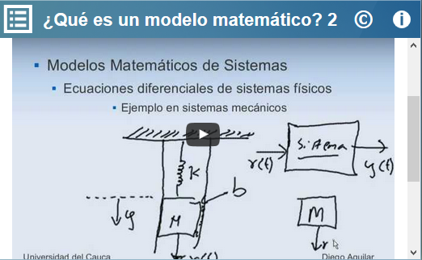

Ecuaciones Diferenciales de primer orden II
Ecuaciones Diferenciales de primer orden II
 Ecuaciones Diferenciales de primer orden II
Ecuaciones Diferenciales de primer orden II
Modelar un fenómeno para poder predecir su futuro a partir de conocer sus características y cuáles son las reglas que gobiernan los cambios que ocurrirán. Que el usuario comprenda los pasos que siguen los investigadores para resolver problemas de la vida real usando ecuaciones diferenciales.
Esta unidad puede utilizarse en la Licenciatura en Matemáticas en la materia de Ecuaciones Diferenciales I, corresponde a la competencia específica: utilizar los principios de ecuaciones diferenciales para resolver un problema que representa un modelo matemático de las unidades 1.3 Ecuación de Bernoulli, y 1.3.2 Aplicaciones de las ecuaciones diferenciales de primer orden.
Se muestran dos videos, en el primero se describe lo que es un modelo matemático y porque es importante analizarlos, en el segundo video se describe brevemente como se puede llegar a modelar un fenómeno.


Se muestran ejemplos de modelos poblacionales, modelos de crecimiento y la relación que estos tienen con las ecuaciones diferenciales. Se muestra que mediante la detección de los parámetros que intervienen en el fenómeno este se puede modelar.
Se presenta como es la ecuación de Bernoulli y para que nos sirve, a continuación se presenta un problema relacionado con la ecuación de Bernoulli y se procede a que el usuario valla resolviéndolo hasta llegar a su solución gráfica. En la etapa final se muestra cómo llegar a obtener una solución gráfica y que beneficios podemos obtener al conocerla.
Se muestra el problema de crecimiento poblacional y a partir de esta el usuario podrá interactuar con la ecuación para poder generar el campo de pendientes.
| Diseño del contenido | Víctor Hugo García Jarillo (Facultad de Ciencias UNAM, LITE) |
| Diseño funcional | Víctor Hugo García Jarillo (Facultad de Ciencias UNAM, LITE) |
| Programación | Víctor Hugo García Jarillo (Facultad de Ciencias UNAM, LITE) |
| Diseño gráfico | Ricardo López Gómez |
| Coordinación | Leticia Montserrat Vargas Rocha |
| Diseño funcional | Victor Hugo García Jarillo (Facultad de Ciencias, UNAM) |
| Programación | Victor Hugo García Jarillo (Facultad de Ciencias, UNAM) |
| Diseño gráfico | Francisco Varela Fuentes |
| Coordinación | Leticia Montserrat Vargas Rocha |
| Desarrollo del contenedor | Oscar Escamilla González |
Los contenidos de esta unidad didáctica interactiva están bajo una licencia Creative Commons Reconocimiento-NoComercial-CompartirIgual.
La unidad didáctica fue creada con Arquímedes, una herramienta de código abierto.
La unidad didáctica contiene escenas elaboradas con Descartes, una herramienta de código abierto.
LITE - UnADM 2014